Chris Tae Seo Lee
Born in Seoul, Korea 🇰🇷 and raised in Beijing, China 🇨🇳 — I graduated from Cornell University with a degree in Urban and Regional Studies and a minor in Information Science, and I am currently pursuing a Master of Design in Interaction Design at Carnegie Mellon University.
Ever since my friend introduced me to the course "Intro to Digital Product Design," I've been deeply immersed in the field, gaining hands-on experience with everything from early-stage startups to unicorn companies in Korea. These opportunities have allowed me to explore exciting areas like AI, travel, and media streaming services while striving to create meaningful user experiences.
Interesting facts about me are..
Photography with disposable camera
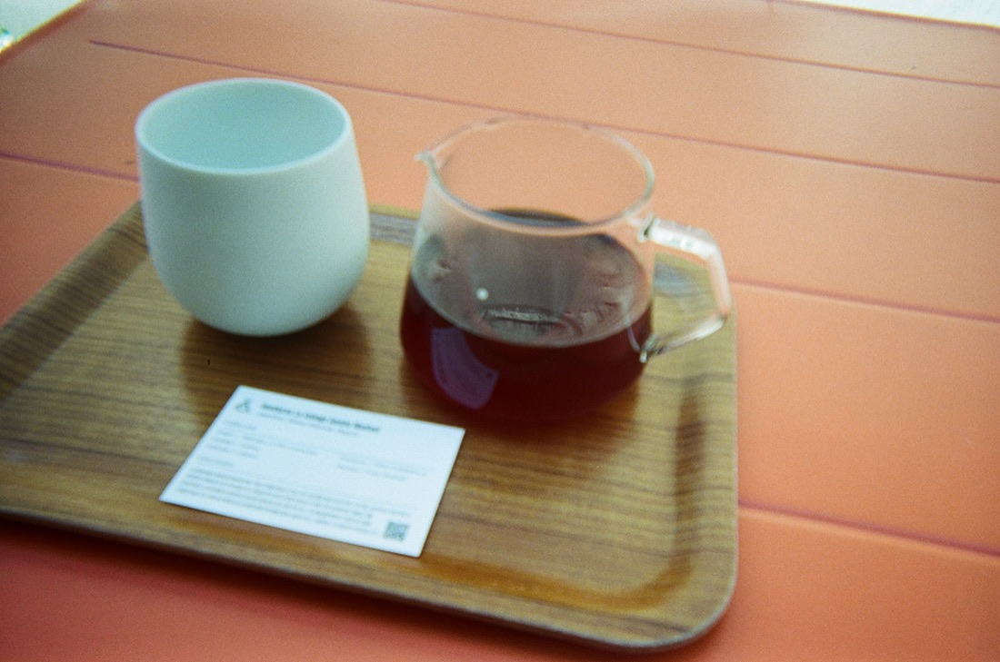
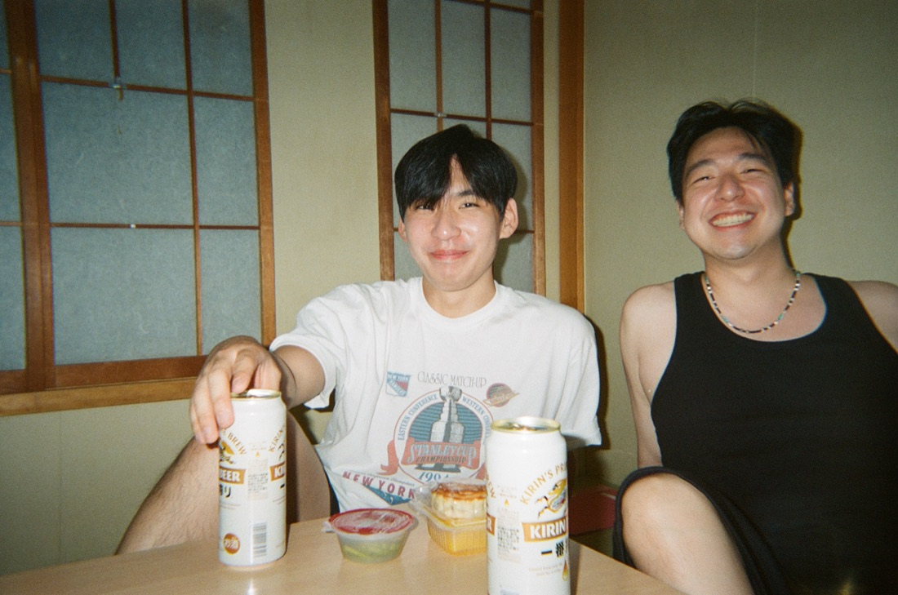
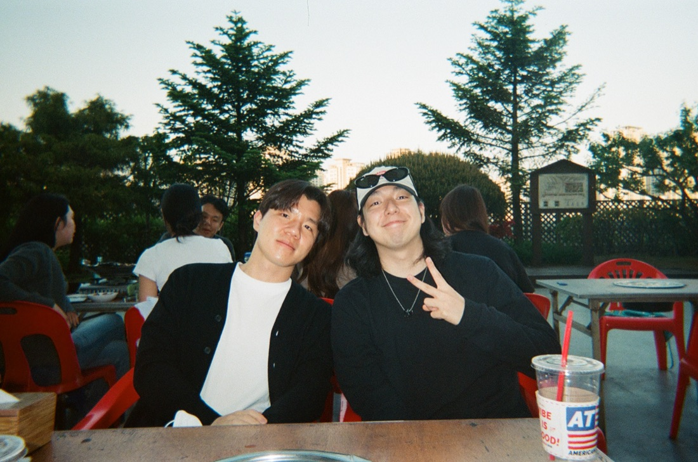
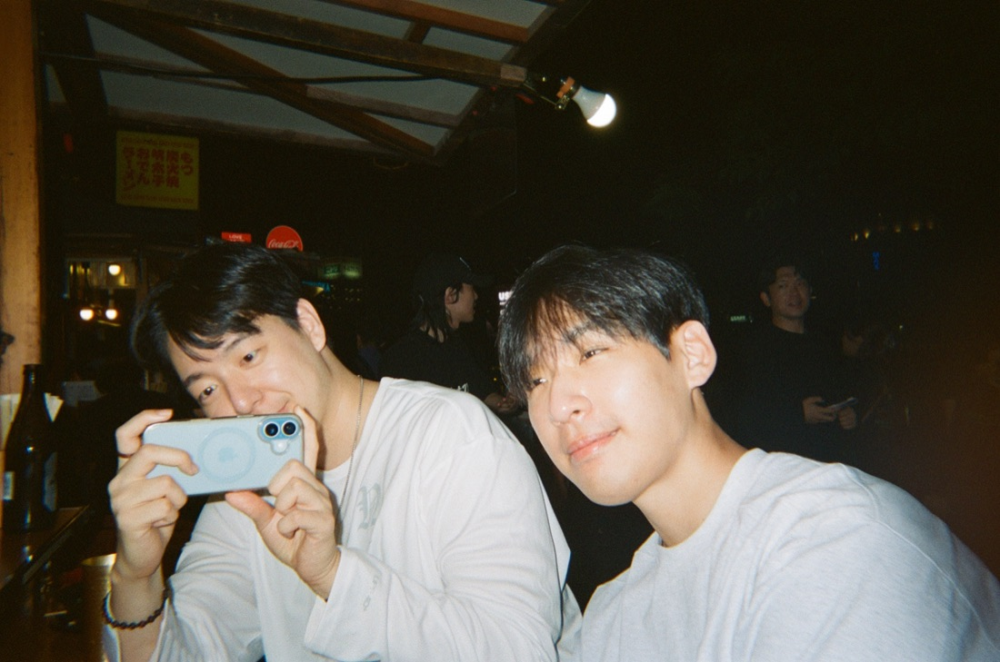
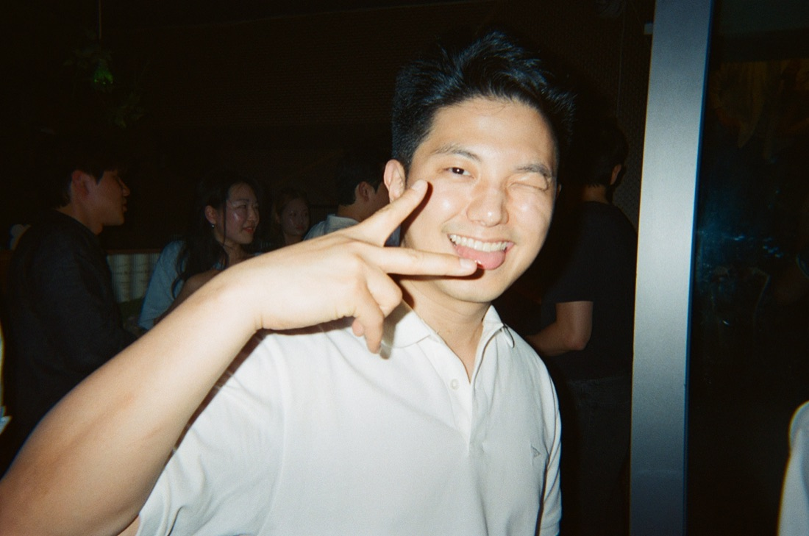
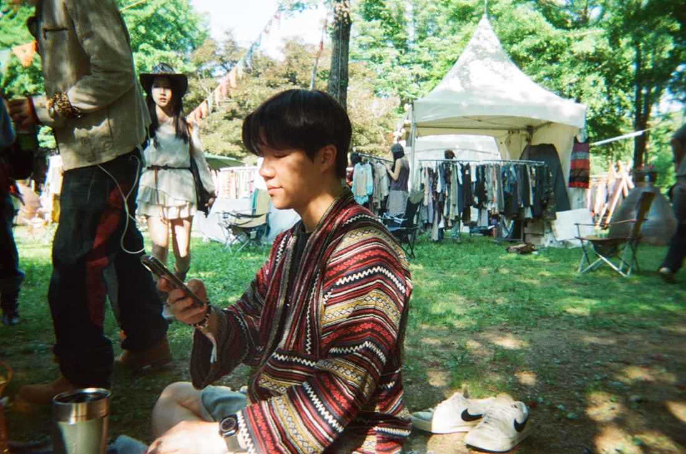
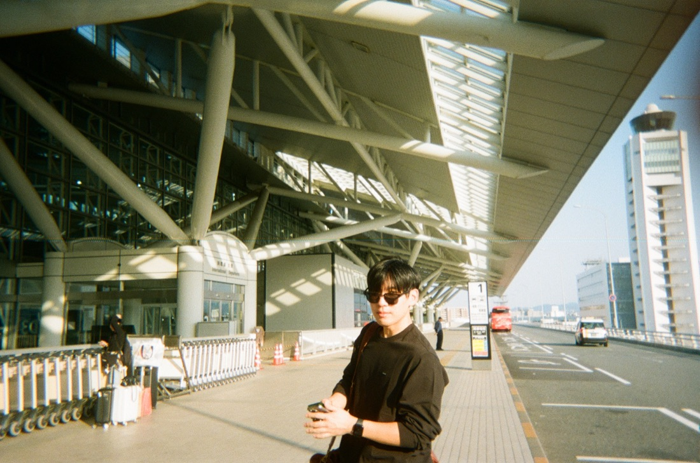
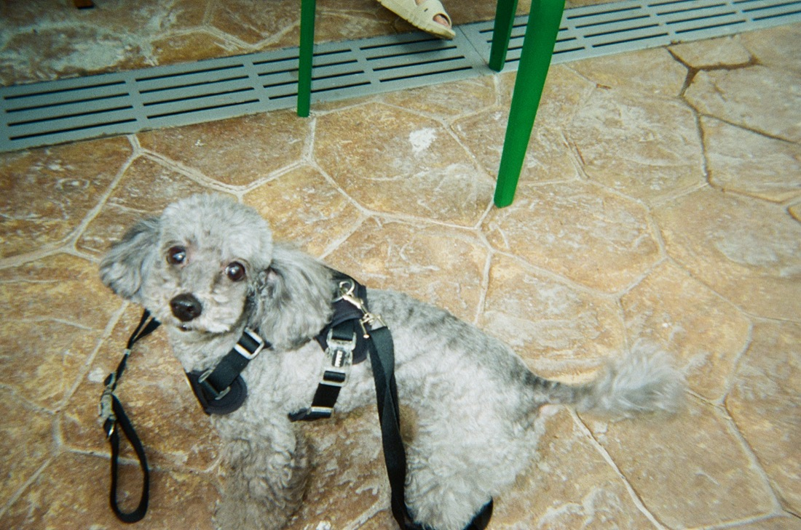
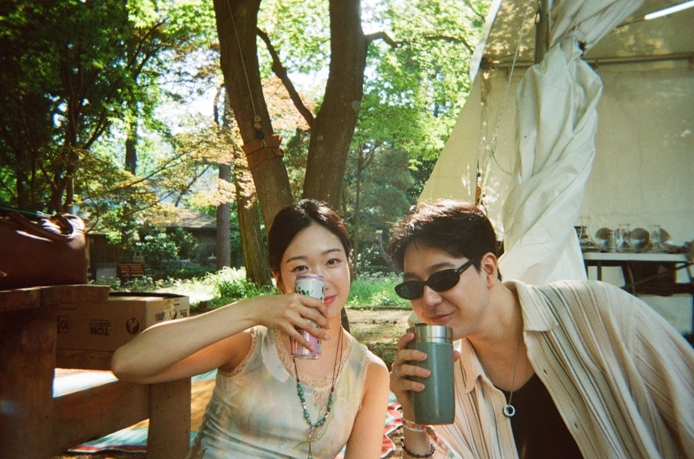
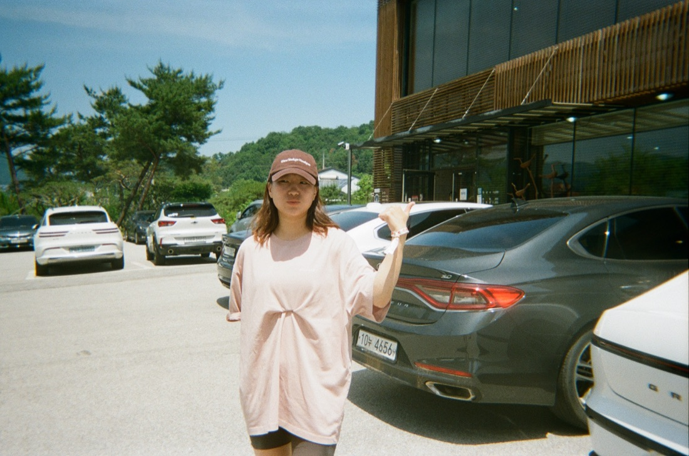
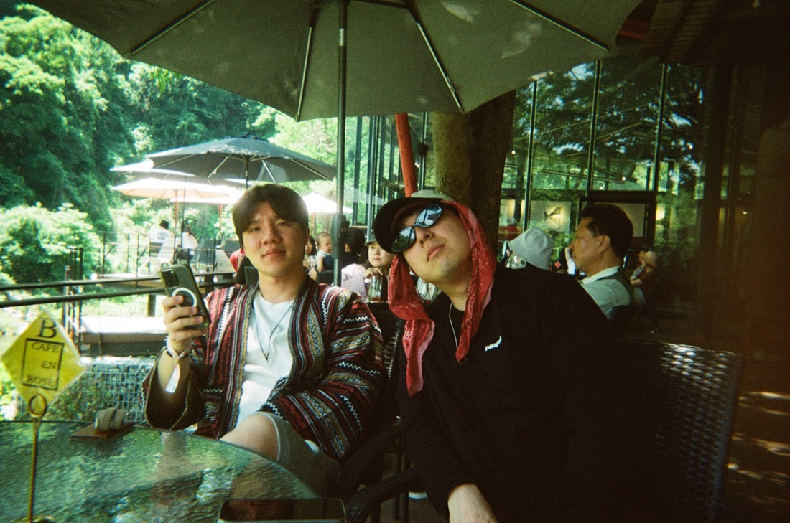